정보통신기사(구) (2019-06-29 기출문제)
1과목: 디지털 전자회로
1. 다음 정류회로에 대한 설명으로 틀린 것은?
- 반파정류회로는 입력신호의 주기와 출력신호의 주기가 동일하다.
- 중간탭 전파정류회로는 브릿지 전파정류회로보다 높은 출력전압을 얻을 수 있다.
- 브릿지 전파정류회로의 PIV(Peak Inverse Voltage) 정격은 출력전압과 동일하다.
- 용량성 필터를 사용하여 맥동률을 감소시킬 수 있다.
(정답률: 63%)

2. 다음의 브리지 정류회로에서 부하(RL)10[Ω]에 평균 직류 출력전압이 10[V]일 때, 각 Diode에 흐르는 피크전류값(Im)은 약 얼마인가?
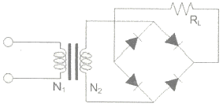
- 0.7[A]
- 1.57[A]
- 1.79[A]
- 3.14[A]
(정답률: 63%)
3. 교류입력전압의 변동이나 부하전류의 변동에 의해 직류출력전압이 변해도 항상일정한 직류전압을 얻을 수 있는 회로는?
- 반파정류회로
- 전파정류회로
- 정전류회로
- 정전압회로
(정답률: 77%)
4. 다음 중 B급 SEPP 증폭기의 특징에 대한 설명으로 틀린 것은?
- IPT와 OPT 변압기가 필요없다.
- DEPP에 비해 TR의 출력전압이 작다.
- 특성이 동일한 pnp 트랜지스터 또는 npn 트랜지스터를 사용한다.
- 동일 출력을 낼 수 있는 부하의 크기는 DEPP의 2배이다.
(정답률: 70%)
5. 다음 중 A급 전력 증폭회로에 대한 설명으로 틀린 것은?
- 입력 신호의 전 주기에 대하여 항상 비활성영역에서 증폭 동작을 한다.
- 입력 출력 파형은 일그러짐이 없이 똑같은 형태를 유지한다.
- 종단의 대신호 증폭에는 전력 손실이 크게 발생되므로 효율이 좋지 않다.
- 직접 부하를 출력에 접속하는 직접 결합방식과 변압기를 경유하여 접속하는 변압기 결합방식으로 구분된다.
(정답률: 55%)
6. 다음 연산증폭기 회로에서 R1=50[kΩ], R2=100[kΩ], R3=10[kΩ], Rf=10[kΩ]이고, V1=3[V], V2=2[V], V3=8[V]일 때 출력전압 VO는?
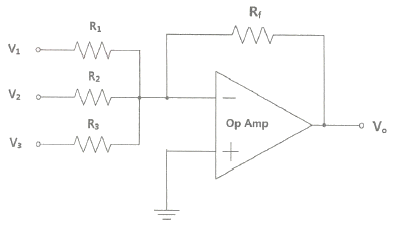
- -8.2[V]
- -8.4[V]
- -8.6[V]
- -8.8[V]
(정답률: 64%)
7. 다음과 같은 증폭기의 교류 입력전압의 크기가 20[mV]일 때, 교류 출력전압의 크기는 얼마인가?
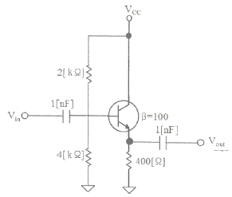
- 20[mV]
- 30[mV]
- 40[mV]
- 50[mV]
(정답률: 66%)
8. 인가되는 역전압의 직류전압에 의해 커패시턴스가 가변되는 소자를 이용하여 발진주파수를 가변하는 발진회로는?
- 윈-브리지 발진회로
- 위상천이 발진회로
- 전압제어 발진회로
- 비안정 멀티바이브레이터
(정답률: 53%)
9. 다음 중 수정진동자의 지지기(Holder)가 갖추어야 할 조건이 아닌 것은?
- 진동 에너지에 손실을 주지 않을 것
- 지지기 및 전극과 수정편 사이에서 상대 위치 변화가 원활할 것
- 외부로부터 기계적 진동이나 충격에 의해서 발진에 지장이 생기지 않을 것
- 기압, 온도, 습도의 영향을 거의 받지 않는 구조일 것
(정답률: 75%)
10. 다음 그림과 같은 발진회로의 명칭은 무엇인가?
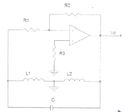
- 콜피츠 발진회로
- LC 발진회로
- 하틀리 발진회로
- 클랩 발진회로
(정답률: 82%)
11. 다음 중 변조방식과 복조방식의 조합이 잘못된 것은?
- FSK-포락선검파
- DPSK-동기검파
- QAM-동기검파
- QPSK-동기검파
(정답률: 65%)
12. 다음 중 복수의 위상에 각각 특정의 데이터 신호를 할당함으로써 동일 주파수에서 고능률의 전송을 할 수 있는 변조 방식은?
- 진폭 위상 변조 방식
- 다중 위상 변조 방식
- 차분 위상 변조 방식
- 잔류 측파대 진폭 변조 방식
(정답률: 76%)
13. AM 변조 시에 반송파의 주파수가 600[kHz], 변조파의 주파수가 7[kHz]라고 할 때 점유주파수대역폭은?
- 7[kHz]
- 14[kHz]
- 70[kHz]
- 140[kHZ]
(정답률: 76%)
14. 다음 그림과 같은 AM변조 회로는 어떤 변조인가?
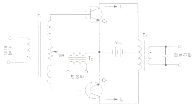
- 베이스 변조회로
- 에미터 변조회로
- 트랜지스터 평형 변조회로
- 컬렉터 변조회로
(정답률: 73%)
15. 다음 회로 중 Flip-Flop 회로를 쓰지 않는 것은?
- 리미터 회로
- 분주 회로
- 기억 회로
- 2진 계수 회로
(정답률: 72%)
16. 다음 회로 중 결합 상태가 직류로 구성된 멀티바이브레이터 회로는?
- 비안정 멀티바이브레이터
- 단안정 멀티바이브레이터
- 쌍안정 멀티바이브레이터
- 비쌍안정 멀티바이브레이터
(정답률: 65%)
17. 다음 논리 함수
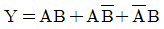
를 간소화한 것으로 옳은 것은?- A+B
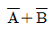
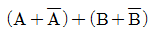
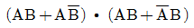
(정답률: 78%)
18. J-K 플립플롭을 그림과 같이 결선하였을 때 클록 펄스가 인가될 때마다 출력 Q의 동작 상태는?
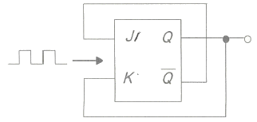
- Reset
- Toggle
- Set
- ∞
(정답률: 78%)
19. 계산기에서 뺄셈을 보수 덧셈으로 하기 위해서 최종적으로 필요한 보수는?
- 1의 보수
- 2의 보수
- 7의 보수
- 9의 보수
(정답률: 82%)
20. 다음 그림은 T F/F을 이용한 비동기 10진 상향계수기이다. 계수값이 10이 되었을 때 계수기를 0으로 하기 위해서는 전체 F/F을 clear시켜야 하는데 이렇게 하기 위해 빈칸에 알맞은 게이트는?
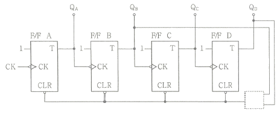
- OR
- AND
- NOR
- NAND
(정답률: 70%)
2과목: 정보통신 시스템
21. 정보통신망에서 사용되지 않는 교환방식은?
- 회선교환방식
- 메시지교환방식
- 위성교환방식
- 패킷교환방식
(정답률: 77%)
22. 다음 괄호 안에 들어갈 장치의 이름을 순서대로 나열한 것은?
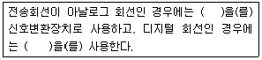
- CSU, DSU
- 모뎀, ONU
- DSU, CSU
- 모뎀, DSU
(정답률: 90%)
23. 다음 중 전송지연시간이 길어서 대화형 통신에 사용하기에는 적당하지 않은 것은?
- 메시지 교환방식
- 회선 교환방식
- 데이터그램 교환방식
- 가상회선 교환방식
(정답률: 80%)
24. 70개의 노드를 망형으로 연결할 때 필요한 회선 수는?
- 780
- 1,225
- 2,415
- 3,160
(정답률: 90%)
25. OSI 7계층에서 네트워크 시스템 상호간에 데이터를 전송할 수 있도록 경로배정과 중계기능, 흐름제어, 오류제어 등의 기능을 수행하는 계층은?
- 데이터링크계층
- 네트워크계층
- 세션계층
- 응용계층
(정답률: 65%)
26. 다음 중 표준 제정을 위한 표준기구와 거리가 먼 것은?
- ANSI
- ITU-T
- IEEE
- OSI
(정답률: 81%)
27. 통신 시스템 내에 있는 동위 계층 또는 동위 개체 사이에서의 데이터 교환을 위한 프로토콜은?
- 네트워크 프로세스간 프로토콜
- 응용 지향 프로토콜
- 네트워크 액세스 프로토콜
- 네트워크 내부 프로토콜
(정답률: 67%)
28. PPP(Point-to-Point Protocol)에서 IP의 동적 협상이 가능하도록 하는 프로토콜은?
- NCP(Network Control Protocol)
- LCP(Link Control Protocol)
- SLIP(Serial Line IP)
- PPPoE(Point-to-Point Protocol over Ethernet)
(정답률: 76%)
29. 다음 중 디지털중계선 회로의 기능이 아닌 것은?
- Ringing
- Office Signaling
- Polar Conversion
- Generation of Frame Code
(정답률: 76%)
30. 현재 국내ㆍ외에서 RFID(Radio Frequency IDentification)시스템에 사용하는 주파수대역 및 용도로 적당하지 않는 것은?(오류 신고가 접수된 문제입니다. 반드시 정답과 해설을 확인하시기 바랍니다.)
- 135[kHz]이하의 저주파(출입통제, 가축관리 등)
- 13.56[MHz]의 고주파(도서관리, 교통카드 등)
- 700[MHz]의 극초단파(유통, 물류 등)
- 2.45[GHz]의 마이크로파 대역(여권, ID카드, 위치추적 등)
(정답률: 69%)
31. PCM 통신방식에서 4[kHz]의 대역폭을 갖는 음성 정보를 8[bit] 코딩으로 표본화하면 음성을 전송하기 위해 필요한 데이터 전송률은 얼마인가?
- 4[kbps]
- 8[kbps]
- 32[kbps]
- 64[kbps]
(정답률: 68%)
32. RFID 리더(Reader)는 크게 제어(Control)부와 아날로그/RF부로 나눌 수 있다. 아날로그/RF부의 기능이 아닌 것은?
- 태그를 활성화하고 전력을 공급하기 위한 고주파전력 생성
- 태그로 전송할 데이터의 변조
- 태그와 통신
- 태그의 수신신호를 복조
(정답률: 69%)
33. 다음 중 부가가치통신망(VAN)에 특화된 응용사례와 거리가 먼 것은?
- 은행 간 현금인출기 공동이용 서비스
- 신용카드 정보 시스템
- 국내외 항공사간 항공권 예약 서비스
- 전화 서비스
(정답률: 89%)
34. 고속 이더넷 100Base-FX의 전송 매체로 옳은 것은?
- 광섬유 케이블
- 카테고리 3인 UTP 케이블
- 카테고리 4인 UTP 케이블
- 카테고리 5인 UTP 케이블
(정답률: 77%)
35. CSMA/CD 방식에 대한 설명으로 맞지 않는 것은?
- 충돌이 발생하면 데이터 전송을 중단하고 일정시간 대기후 재전송하는 방식이다.
- 랜덤할당방식에 의한 전송매체 엑세스 방식이다.
- 채널의 사용권한이 이용자들에게 균등하게 분배되는 방식이다.
- 여러 개의 노드가 하나의 통신회선에 접속되는 버스형에 주로 많이 사용된다.
(정답률: 63%)
36. 서비스의 중단을 야기하는 장애구간을 탐색하기 위하여, 각 구간을 절분하여 시험하는 루프백(Loop-Back) 시험에 대한 설명으로 잘못된 것은?
- 루프백의 제어방법에는 자국(Local)제어방법과 원격국(Remote)제어방법이 있다.
- 원격루프백은 자국으로부터 수신한 신호를 자국으로 돌려주는 것을 말한다.
- 루프백 시험을 위해서는 패턴을 발생하고 분석하는 계측기를 사용하여야 한다.
- 루프백이 수행되는 지점은 각 통신시스템에서 신호의 입력 및 출력이 이루어지는 지점이다.
(정답률: 71%)
37. 전기통신망 및 서비스 계획, 공급, 설치, 유지, 보수, 운용 및 관리를 지원하기 위한 네트워크는?
- CDMA(Code Division Multiple Access)
- PSTN(Public Switched Telephone Network)
- ISDN(Integrated Services Digital Network)
- TMN(Telecommunications Management Network)
(정답률: 71%)
38. 테스트 프로그램에 의한 시스템 성능평가 방법 중 각각의 프로그램언어로 프로그램된 표준적인 실용 프로그램으로 이것을 실행시킴에 따라 대상시스템을 평가할 수 있으며 입ㆍ출력장치와 보조기억장치 등을 포함한 시스템 평가가 가능한 프로그램은?
- 커널(Kernel) 프로그램
- 벤치마크(Benchmark) 프로그램
- 합성(Synthetic) 프로그램
- 펌웨어(Firmware) 프로그램
(정답률: 67%)
39. IP 스푸핑(Spoofing)을 막는 방법으로 옳지 않은 것은?
- 액세스 제어
- 필터링
- 오픈 API
- 암호화
(정답률: 88%)
40. ITU-T 권고사항으로서 시스템의 유지보수 기능을 구현하는데 적용되는 기술로서 현재 가장 많이 사용되는 방법은?
- 예방식 유지보수
- 사후 유지보수
- 절충식 유지보수
- 완전 유지보수
(정답률: 71%)
3과목: 정보통신 기기
41. 컴퓨터의 중앙처리장치 구성 요소가 아닌 것은?
- 내부기억장치
- 연산장치
- 제어장치
- 출력장치
(정답률: 83%)
42. 그림, 차트, 도표, 설계 도면을 읽어 이를 디지털화하여 컴퓨터에 입력시키는 기기는?
- 디지타이저
- 플로터
- 그래픽 단말기
- 문자 판독기
(정답률: 83%)
43. 정보 단말장치 중 입출력기능, 데이터 처리기능, 계산 및 프로그램 개발 기능을 가진 장치는?
- Dummy Terminal
- Up-Down Terminal
- Intelligent Terminal
- Remote Batch Terminal
(정답률: 85%)
44. 광전송시스템에서 전송신호와 간섭을 유발시키는 역반사 잡음을 방지하기 위한 것은?
- 광감쇠기
- 광서큘레이터
- 광커플러
- 광아이솔레이터
(정답률: 76%)
45. 라우터가 패킷을 수신하면 라우터 포트 중 단 하나만을 통해 패킷을 전달하는 라우팅을 무엇이라 하는가?
- 싱글캐스트 라우팅
- 유니캐스트 라우팅
- 멀티캐스트 라우팅
- 브로드캐스트 라우팅
(정답률: 78%)
46. 케이블 모뎀을 64-QAM으로 하향 데이터전송(6[MHz] 대역폭)을 한다. 최대 데이터 전송률은?
- 20[Mbps]
- 30[Mbps]
- 36[Mbps]
- 40[Mbps]
(정답률: 83%)
47. 4-PSK 변조방식에서 변조속도가 1,200[baud]일 때 데이터 전송속도는 몇 [bps]인가?
- 1,200[bps]
- 2,400[bps]
- 3,600[bps]
- 4,800[bps]
(정답률: 82%)
48. 어느 센터의 최번시 통화량을 측정하니 1시간 동안에 3분짜리 전화호100개가 측정되었다. 이 센터의 최번시 통화량은 몇 [Erl]인가?
- 4[Erl]
- 5[Erl]
- 6[Erl]
- 7[Erl]
(정답률: 85%)
49. 다음 중 디지털 유선 전화기의 특징으로 틀린 것은?
- 음질이 뛰어나다.
- 기능이 다양하다.
- 통신보안에 취약하다.
- 데이터 단말기의 접속이 용이하다.
(정답률: 83%)
50. 다음 중 전자 교환기의 특징으로 틀린 것은?
- 통화량을 제어하기 쉽다.
- 가입자 수용용량이 크다.
- 전력소비가 적지만 수명이 짧다.
- 통신속도가 빠르고 신뢰성이 높다.
(정답률: 84%)
51. 대용량 전자교환기에서 가장 많이 채택하고 있는 접속 제어 방식은?
- 자동 제어 방식
- 반전자 제어 방식
- 축적 프로그램 제어 방식
- 중앙 제어 방식
(정답률: 72%)
52. 텔레포니의 핵심 기술인 VoIP의 구성요소로 거리가 먼 것은?
- 단말장치
- 게이트웨이
- 게이트키퍼
- 방향성 결합기
(정답률: 73%)
53. IPTV 서비스의 데이터 전송방식으로 가장 많이 쓰이는 방식은?
- 유니캐스트(Unicast)
- 멀티캐스트(Multicast)
- 브로드캐스트(Broadcast)
- 애니캐스트(Anycast)
(정답률: 78%)
54. 이동통신의 세대와 기술이 바르게 짝지어진 것은?
- 1세대 : GSM
- 2세대 : AMPS
- 3세대 : WCDMA
- 4세대 : CDMA
(정답률: 78%)
55. 지구국의 EIRP(Effective Isotropic Radiated Power) 시스템에서 EIRP를 바르게 나타낸 것은?
- 송신전력+송신 안테나 이득
- 송신전력-송신 안테나 이득
- 송신전력×송신 안테나 이득
- 송신전력÷송신 안테나 이득
(정답률: 77%)
56. 다음 위성통신의 종류 중 선박들 간의 정보교환, 선박-육상간의 정보교환 등으로 사용되는 위성통신으로 옳은 것은?
- 통신위성
- 해사위성(INMARSAT)
- 과학위성
- 지구관측위성
(정답률: 87%)
57. 다음 중 우리나라 지상파 DMB의 압축방법은?(관련 규정 개정전 문제로 여기서는 기존 정답인 4번을 누르면 정답 처리됩니다. 자세한 내용은 해설을 참고하세요.)
- MPEG-1
- MPEG-2
- MPEG-3
- MPEG-4
(정답률: 60%)
58. 다음 보기가 설명하는 디지털 멀티미디어 콘텐츠 보호방법은?
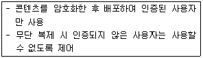
- DRM
- Water Marking
- DOI
- INDECS
(정답률: 70%)
59. 다음 중 메시지 통신시스템(MHS : Message Handling System)의 구성요소에 해당하지 않는 것은?
- User Agent
- Message Transfer Agent
- Message Store
- Codec
(정답률: 83%)
60. 다음 중 멀티미디어 디지털 콘텐츠의 저작권 보호를 위한 ‘디지털워터마킹’에 대한 설명으로 옳지 않은 것은?
- 비가시성으로 눈에 띄지 않아야 한다.
- 왜곡 및 잡음에 강해야 된다.
- 인식을 위해서 원본을 가지고 있었야 한다.
- 최소의 bit를 사용해야 한다.
(정답률: 83%)
4과목: 정보전송 공학
61. 10[GHz]의 직접확산 시스템이 20[kbaud]의 데이터 전송에 사용된다. 20[Mbps]의 확산부호를 BPSK 변조시킬 때 이 시스템의 처리이득은 얼마인가?
- 13[dB]
- 18[dB]
- 27[dB]
- 30[dB]
(정답률: 69%)
62. 다음 중 다중화 장치에 대한 설명으로 가장 옳지 않은 것은?
- 여러 개의 신호를 동시에 하나의 채널로 전송하는 장치이다.
- 정적인 공동 이용장치이다.
- 데이터를 병렬로 전송하는 장치를 말한다.
- 하나의 물리적 회선을 통하여 전송하는 시스템이다.
(정답률: 55%)
63. 다음 중 QAM 변조방식에 대한 설명으로 가장 적합한 것은?
- 입력신호에 따라 반송파의 진폭을 변화시키는 방식
- 입력신호에 따라 반송파의 최소 주파수를 변화시키는 방식
- 진폭 신호에 따라 적은 전력으로 다량의 정보를 전송시키는 방식
- 반송파의 진폭과 위상을 데이터에 따라 변화시키는 진폭변조와 위상변조 방식의 혼합
(정답률: 83%)
64. 다음 중 DPCM 송신기의 구성요소가 아닌 것은?
- 양자화기
- 예측기
- 복호기
- 부호화기
(정답률: 58%)
65. -2[dB/km]의 손실을 가지는 케이블의 시작점에서의 전력이 4[mW]였다면 5[km] 뒤에서의 신호의 전력은 얼마인가?
- 0.2[mW]
- 0.4[mW]
- 0.6[mW]
- 0.8[mW]
(정답률: 72%)
66. 30[m] 높이의 빌딩 옥상에 설치된 안테나로부터 주파수가 2[GHz]인 전파를 송출하려고 한다. 이 전파의 파장은 얼마인가?
- 5[cm]
- 10[cm]
- 15[cm]
- 20[cm]
(정답률: 81%)
67. 다음 중 마이크로파 통신의 특징이 아닌 것은?
- 장거리 통신은 중간에 중계소를 설치해야 한다.
- 가시거리 내 통신으로 장애물이 없는 거리 내에서만 가능하다.
- 파장이 짧아 지향성이 예민한 안테나를 사용할 수 있다.
- 협대역 전송이 가능하고 보안성이 높다.
(정답률: 68%)
68. 다음 중 광강도 변조의 설명으로 맞는 것은?
- 파장이 서로 다른 광 신호간에 상호 간섭을 받지 않는 변조방식이다.
- 여러 광 신호를 하나의 광섬유에 전송하기 위해 행하는 변조방식이다.
- 광 신호에 포함된 직류성분을 제거하기 위해 행하는 변조방식이다.
- 발광 디바이스의 휘도를 신호에 따라 변화시키는 휘도 변조방식이다.
(정답률: 62%)
69. 다음 중 다중모드 광섬유(Multimode Fiber)에 대한 설명으로 알맞지 않은 것은?
- 코어내를 전파하는 모드가 여러 개 존재한다.
- 모드 간 간섭이 있어 전송대역이 제한된다.
- 고속, 대용량 전송에 사용된다.
- 단일모드 광섬유보다 제조 및 접속이 용이하다.
(정답률: 55%)
70. 디지털 전송방식에서 원신호속도, 샘플링방식, 베어러 속도가 잘못 연결된 것은?
- 1,200bps : 4,800bps 단점 샘플링 : 6.4kbps
- 2,400bps : 2,400bps 단점 샘플링 : 3.2kbps
- 4,800bps : 4,800bps 단점 샘플링 : 6.4kbps
- 9,600bps : 9,600bps 단점 샘플링 : 12.8kbps
(정답률: 70%)
71. 통신라인을 통해 데이터를 전송하는 방식에는 직렬전송과 병렬전송이 있는데, 다음 중 병렬 전송의 특징이 아닌 것은?
- 원거리 통신에 주로 사용된다.
- 송수신 사이에 동기를 위한 추가적인 타이밍선이 필요하다.
- 일정한 시간 내에 다량의 정보 전송이 유리하다.
- 비용이 많이 든다.
(정답률: 71%)
72. 다음 중 국 간 신호 메시지와 설명이 잘못 연결된 것은?
- IAM(Initial Address Message) : 호 설정 요청 메세지
- ACM(Address Complete Message) : 호 설정 수락 메세지
- REL(Release Message) : 호 해제 요청 메세지
- RCL(Release Complete Message) : 호 해제 완료 메세지
(정답률: 70%)
73. 다음 중 플래그 동기방식에서 프레임의 정보부가 연속적으로 “1”이 5개 존재할 경우 그 다음에 “0”을 삽입하여 플래그의 비트패턴과 구분되도록 하는 조치는?
- 디스크램블
- 비트 스터핑
- 클록 첨가
- 파일럿
(정답률: 84%)
74. 클래스 B주소를 가지고 서브넷 마스크 255.255.255.240으로 서브넷을 만들었을 때 나오는 서브넷의 수와 호스트의 수가 맞게 짝지어진 것은?(오류 신고가 접수된 문제입니다. 반드시 정답과 해설을 확인하시기 바랍니다.)
- 서브넷 2,048, 호스트 14
- 서브넷 14, 호스트 2,048
- 서브넷 4,904, 호스트 14
- 서브넷 14, 호스트 4,094
(정답률: 75%)
75. 다음 중 자율 시스템(AS: Autonomous System)에 대한 설명으로 틀린 것은?
- 인터넷 상에서 자율시스템이라 함은 관리적 측면에서 한 단체에 속하여 관리되고 제어됨으로써, 동일한 라우팅 정책을 사용하는 네트워크 또는 네트워크 그룹을 말한다.
- 라우팅 도메인으로도 불리며, 전세계적으로 유일한 자율시스템번호, AN(Autonomous System Number)을 부여받는다.
- 한 자율시스템 내에서의 IP네트워크는 라우팅 정보를 교환하기 위해 내부 라우팅 프로토콜인 IGP(Interior Gateway Protocol)를 사용한다.
- 타 자율시스템과의 라우팅 정보 교환을 위해서는 외부 라우팅 프로토콜인 EIGRP(Enhanced Interior Gateway Roution Protocol)를 사용한다.
(정답률: 63%)
76. 다음 중 TCP의 특징이 아닌 것은?
- 접속형 프로토콜
- 신뢰성 서비스
- 테이터그램 서비스
- 혼잡 제어
(정답률: 60%)
77. 다음 IP 주소들이 어느 클래스에 속하는지를 알맞게 연결한 것은?
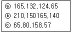
- ⓐ C 클래스, ⓑ E 클래스, ⓒ D 클래스
- ⓐ A 클래스, ⓑ B 클래스, ⓒ C 클래스
- ⓐ B 클래스, ⓑ C 클래스, ⓒ A 클래스
- ⓐ A 클래스, ⓑ B 클래스, ⓒ D 클래스
(정답률: 88%)
78. 프로토콜의 기능 중 송신측 개체로부터 오는 데이터의 양이나 속도를 수신측 개체에서 조절하는 기능은 무엇인가?
- 연결제어
- 에러제어
- 흐름제어
- 동기제어
(정답률: 85%)
79. 짝수 패리티 비트의 해밍코드로 0011011을 받았을 때(왼쪽에 있는 비트부터 수신됨), 오류가 정정된 정확한 코드는 무엇인가?
- 0111011
- 0011000
- 0101010
- 0011001
(정답률: 72%)
80. 다음 중 IEEE 802.3 프로토콜에 해당하는 것은?
- CSMA/CD
- Token Bus
- Token Ring
- Frame Relay
(정답률: 72%)
5과목: 전자계산기일반 및 정보통신설비기준
81. 다음 중 CPU(Central Processing Unit)의 내부 구성요소로 올바르게 짝지어진 것은?
- ALU, Address Unit, Control Unit
- Instruction, Register, Control Unit
- ALU, Register, Control Unit
- Instruction, Address Unit, Control Unit
(정답률: 78%)
82. 수식 “(011100)2+(100011)2”를 계산한 후, 8진수로 올바르게 변환한 것은?
- (77)8
- (66)8
- (14)8
- (49)8
(정답률: 77%)
83. 대기하고 있는 프로세스 p1, p2, p3, p4의 처리시간은 24[ms], 9[ms], 15[ms], 10[ms] 일 때, 최단 작업 우선(SJF, Shortest-Job-First)스케쥴링으로 처리했을 때 평균 대기 시간은 얼마인가?
- 8.5 [ms]
- 14.5 [ms]
- 15.5 [ms]
- 25.25 [ms]
(정답률: 62%)
84. 다음 상대 주소지정방식을 사용하는 점프(Jump)명령어가 300번지에 저장되어있다고 가정할 때, 오퍼랜드가 A=20이라면, 몇 번지로 점프할 것인가?
- 20
- 300
- 320
- 321
(정답률: 72%)
85. 기억된 내용의 일부를 이용하여 기억되어 있는 데이터에 직접 접근하여 정보를 읽어내는 장치는?
- 가상기억장치(Virtual Memory)
- 연관기억장치(Associative Memory)
- 캐시 메모리(Cache Memory)
- 보조기억장치(Auxiliary Memory)
(정답률: 79%)
86. Job Scheduling에서 우선순위에 밀려서 작업처리가 지연될 경우, 지연되는 정도에 따라서 우선순위를 높여주는 것을 무엇이라 하는가?
- Changing
- Aging
- Controlling
- Deleting
(정답률: 82%)
87. 다음 중 문자의 표시와 관계없는 코드는?
- BCD 코드
- ASCII 코드
- EBCDIC 코드
- Gray 코드
(정답률: 80%)
88. 다음 중 오퍼레이팅 시스템에서 제어 프로그램에 속하는 것은?
- 데이터 관리프로그램
- 어셈블러
- 컴파일러
- 서브루틴
(정답률: 71%)
89. 다음 중 페이징(Paging)기법에 대한 설명으로 틀린 것은?
- 가상 기억장치 관리 기법의 하나이다.
- 기억장소를 일정한 블록 크기의 단위로 분할하여 사용하는 방법이다.
- 페이지의 크기가 클수록 기억 공간의 낭비가 적어진다.
- 페이지의 크기가 작을수록 페이지 관리테이블의 공간이 더 많이 필요하다.
(정답률: 77%)
90. 다음 중 모바일 기기용 운영체제가 아닌 것은?
- Android
- IBM AIX
- BlackBerry
- Tizen
(정답률: 78%)
91. 이용요금을 미리 받고 전기통신서비스를 제공하는 사업(선불통화서비스)을 하려는 기간통신사업자는 보증보험증서 사본 등의 관련 자료를 누구에게 제출해야 하는가?
- 과학기술정보통신부장관
- 방송통신위원장
- 중앙전파관리소장
- 한국정보통신진흥협회장
(정답률: 77%)
92. 가공강전류전선의 사용전압이 저압일 경우 가공통신선의 지지물과 가공강전류전선간의 이격거리는 얼마 이상이어야 하는가?
- 30[cm]
- 60[cm]
- 90[cm]
- 1[m]
(정답률: 56%)
93. 다음 중 전기통신사업법에서 규정하는 “전기통신”에 대한 정의로 틀린 것은?
- 유선 방식으로 부호ㆍ문언ㆍ음향 또는 영상을 송신하거나 수신하는 것
- 무선 방식으로 부호ㆍ문언ㆍ음향 또는 영상을 송신하거나 수신하는 것
- 광선 방식으로 부호ㆍ문언ㆍ음향 또는 영상을 송신하거나 수신하는 것
- 전기적 방식으로 부호ㆍ문언ㆍ음향 또는 영상을 송신하거나 수신하는 것
(정답률: 78%)
94. ‘저압’에 대한 용어의 정의로 알맞은 것은?
- 직류 750볼트 이하, 교류는 600볼트 이하
- 직류 600볼트 이하, 교류는 750볼트 이하
- 직류 700볼트 이하, 교류는 650볼트 이하
- 직류 700볼트 이하, 교류는 600볼트 이하
(정답률: 72%)
95. 다음 중 기간통신사업자가 제공하려는 전기통신서비스에 관하여 정하는 이용약관에 포함되지 않는 것은?
- 전기통신역무를 제공하는데 필요한 설비
- 전기통신사업자 및 이용자의 책임에 관한 사항
- 수수료ㆍ실비를 포함한 전기통신서비스의 요금
- 전기통신서비스의 종류 및 내용
(정답률: 66%)
96. 다음 중 용역업자가 발주자에게 통보해야 하는 감리결과에 포함되지 않는 것은?
- 착공일 및 완공일
- 공사업자의 성명
- 사용자재의 제조원가
- 정보통신기술자배치의 적정성 평가결과
(정답률: 78%)
97. 어린이집을 설치ㆍ운영하는 자는 폐쇄회로 텔레비전에 기록된 영상정보를 몇일 이상 보관하여야 하는가?
- 30일
- 60일
- 90일
- 180일
(정답률: 68%)
98. 다음 중 방송통신의 원활한 발전을 위하여 새로운 방송통신 방식을 채택하는 기관은?
- 한국정보통신기술협회
- 국립전파연구원
- 과학기술정보통신부
- 한국정보화진흥원
(정답률: 74%)
99. 다음 중 전기통신사업법에서 정하는 용어의 정의로 옳지 않은 것은?
- “자가전기통신설비”란 사업용전기통신설비 외의 것으로서 특정인이 타인의 전기통신에 이용하기 위하여 설치한 전기통신설비를 말한다.
- “전기통신사업자”란 등록 또는 신고를 하고 전기통신역무를 제공하는자를 말한다.
- “사업용전기통신설비”란 전기통신사업에 제공하기 위한 전기통신설비를 말한다.
- “전기통신설비”란 전기통신을 하기 위한 기계ㆍ기구ㆍ선로 또는 그 밖에 전기통신에 필요한 설비를 말한다.
(정답률: 73%)
100. 다음 중 공동주택에 홈네트워크를 설치하는 경우 갖추어야 하는 홈네트워크 장비가 아닌 것은?
- 홈게이트웨이
- 단지네트워크장비
- 세대내 무선네트워크장비
- 폐쇄회로텔레비전장비
(정답률: 52%)